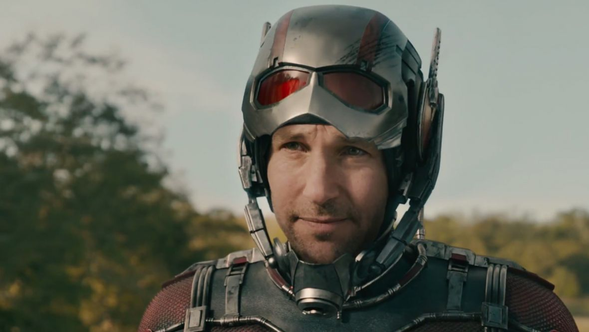

Ant-man
Ant-man (2015) -filmweb

Zawodowy oszust Scott Lang (Paul Rudd) aka Ant-Man, za sprawą niezwykłego kostiumu potrafi
zmniejszać się do rozmiarów mrówki, zyskując jednocześnie nadludzką siłę.
Gdy świat stanie w obliczu nowej generacji zagrożeń, Ant-Man wraz ze swoim mentorem doktorem
Hankiem Pymem (Michael Douglas), zaplanuje skok, który może zapobiec katastrofie.
Strona główna